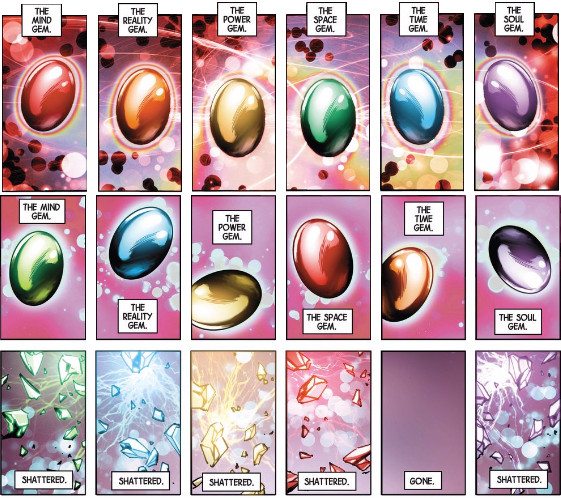
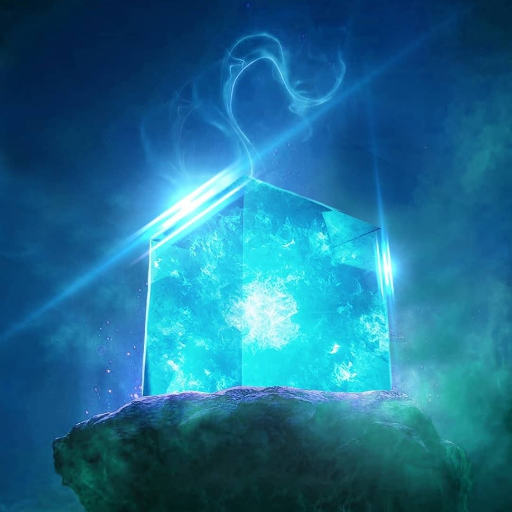
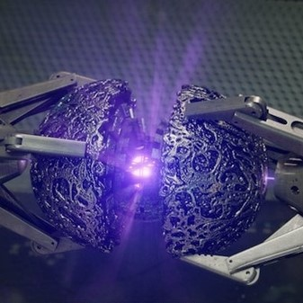
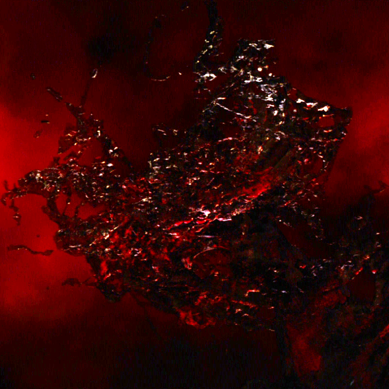
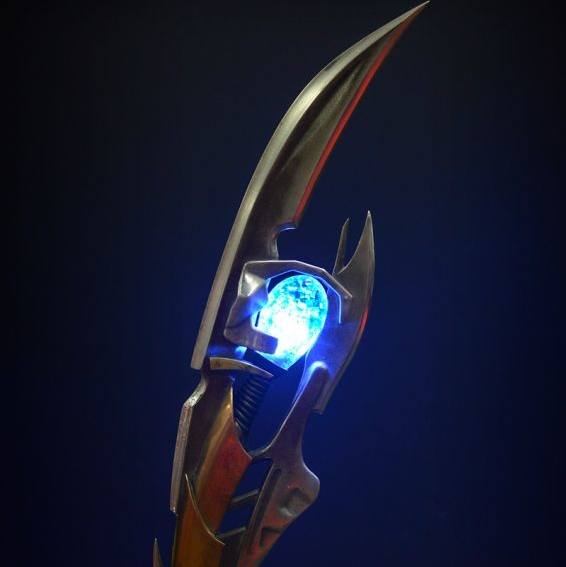
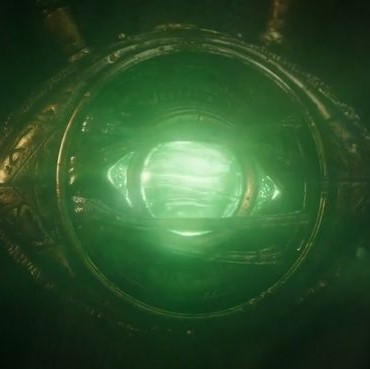
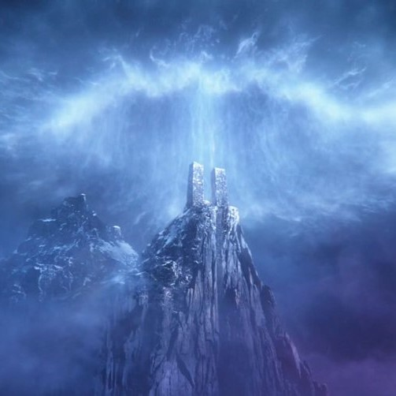

The Infinity Gems (originally referred to as Soul Gems and later as Infinity Stones) are six gems appearing in Marvel Comics. The six gems are the Mind, Power, Reality, Soul, Space, and Time Gems. (Some later storylines, crossovers and other media feature a seventh of some sort.) The Gems have been used by various characters in the Marvel Universe.The gems played a prominent role in the first three phases of the Marvel Cinematic Universe, where they are referred to as the Infinity Stones.
The Infinity Stones are six immensely powerful gem-like objects tied to different aspects of the universe, created by the Cosmic Entities. Each of the stones possesses unique capabilities that have been enhanced and altered by various alien civilizations for millennia. As the Infinity Stones are the representation of all the necessary aspects of existence, they have absolute control over the fabric of reality they represent and from it, they derive extremely powerful capabilities to be wielded and are the most powerful artifacts in the known universe. Their power keeps the stability of the universe, meaning if they were removed from their reality, said reality would suffer catastrophic consequences in time.
However, due to their sheer power, only a single being of exceptional power, or collections of lesser beings who are unified and focused in their intent, is able to wield the stones. As a result, the Stones were often placed in mediums that would allow for a limited, but more stable, access to their power such as the Eye of Agamotto or the Scepter.The only known way to destroy an Infinity Stone is via something that possesses the same unique energy signature as the Stones themselves.
In the comics, the stones were originally referred to as Soul Gems before Thanos decided Infinity Gems was a more appropriate name. The six gems consist of Mind, Soul, Power, Space, Time, and Reality and all of the gems, with the sole exception of the Time Gem, were shattered. They were recreated after Secret Wars ended and the Marvel Universe was restored, with the Reality Gem appearing in the extra-dimensional Weirdworld.
| GEM | COLOUR | POWER AND CAPABILITIES | POCKET DIMENSION | MEDIUM/LOCATION |
|---|---|---|---|---|
| Space | Purple(Origin) | Allows the user to exist in any location; move any object anywhere throughout reality; warp or rearrange space; teleport themselves and others; increase their speed, and alter the distance between objects contrary to the laws of physics. At full potential, when backed by the Power Gem, the Space Gem grants the user omnipresence. | The Vast: an endless expanse of empty existence stretching on into forever. Its ruler is unknown. |  |
| Blue(MCU) | ||||
| Power | Red(Origin) | Allows the user to access and manipulate all forms of energy and/or powers; i.e. enhancing their physical strength and durability; augment any superhuman ability; and boost the effects of the other five Gems. At full potential, the Power Gem grants the user omnipotence. | The Arena: resembles a Colosseum where heroes fight each other in a contest of might. Ruled by Dynamus, the living embodiment of the Power Cosmic. |  |
| Purple(MCU) | ||||
| Reality | Yellow(Origin) | Allows the user to fulfill their wishes, even if the wish is in direct contradiction with scientific laws, and do things that would normally be impossible. At full potential, when backed by the other five Gems, the Reality Gem allows the user to alter reality on a universal scale and also create any type of alternate reality the user wishes | World Pool:used to access alternate realities, which are portrayed as an endless comic book collection. Overseen by Archivus, the chronicler of the Multiverse. |  |
| Red(MCU) | ||||
| Mind | Blue(Origin) | Allows the user to enhance their mental and psionic abilities and access the thoughts and dreams of other beings. At full potential, when backed by the Power Gem, the Mind Gem can access all minds in existence simultaneously. The Mind Gem is also the manifestation of the universal subconscious. | The Mindscape: allows the user to bring anything they imagine or dream of to life. Overseen by the Sleepwalkers. |  |
| Yellow(MCU) | ||||
| Time | Orange(Origin) | Allows the user to see into the past and the future; stop, slow down, speed up or reverse the flow of time; travel through time; change the past and the future; age and de-age beings, and trap people or entire universes in unending loops of time. At full potential, when backed by the Power Gem, the Time Gem grants the user omniscience and total control over the past, present, and future | Ellipsis: manipulates the flow of time for anyone within it. Its ruler is unknown. |  |
| Green(MCU) | ||||
| Soul | Green(Origin) | Allows the user to steal, control, manipulate, and alter living and dead souls; as well as animate the motionless. The Soul Gem also acts as a gateway to an idyllic pocket universe. At full potential, when backed by the Power Gem, the Soul Gem grants the user control over all life in the universe. | Soul World: the final resting place for all lost spirits. Overseen by the Soul-Eater Devondra. |  |
| Orange(MCU) |
The Tesseract is named for its cube-like appearance and is capable of controlling space itself, providing the user instant access to any location throughout the universe if used correctly. This stone played an important role in humanity's development during the dawn of the superhero age, attracting the attention of forces such as Red Skull and Thanos, both of whom sought to use the Tesseract's power for their own sinister intents. It is later revealed that the cube is a containment unit built around the actual Infinity Stone so that it could be somewhat safely handled and controlled. Despite such protection, touching the Tesseract barehanded can still have dire consequences as seen with Red Skull.
However, it was later hinted that the Space Stone punished Red Skull for abusing its power for his own gain, suggesting at least some of the Infinity Stones can be touched directly by ordinary beings if they are deemed worthy.s naturally expected for an Infinity Stone, the Space Stone possesses extraordinary power. It's power makes any lesser being unable to touch it and even specific equipments would only allow the wielder to hold it's container briefly before exploding. The Space Stone's power is described as being potent enough to wipe out the Earth and even Hela was impressed by it's power whereas none of the other formidable artifacts in Odin's Vault was able to do so.
The Power Stone is a remnant of one of the six singularities which existed before the universe.The Power Stone is an incredible power source, it increases the user's physical abilities and allows it to manipulate energy, which, when used at full potential, has enough power to obliterate an entire planet when unleashed.As the Power Stone is one of the six Infinity Stones, it holds tremendous levels of great supernatural power that makes it the most powerful artifact of all creation. It's power could only be wielded by beings of immense power and can destroy planets.
The Power Stone is composed of horrondous amounts of immensely destructive and explosive purple fire-like energy that can be used by it's wielder. It's destructive powers were intially shown to be rather straightforward, as both Ronan and Eson the Searcher simply fired purple energy waves strong enough to knock down and incapacitate most of the Guardians and even destroy an entire planet with a single focused projection. However, it is revealed that wielded by those who fully understands the Stone's powers, not only does the power increase, but also the Power Stone's violent energies can be finely manipulated to achieve a diverse variety of dangerous capabilities, as Thanos showed after inserting it inside the Gauntlet.
The Soul Stone represents the fabric of the Soul and hence possesses absolute control over it. This is the source of the Stone's extremely esoteric, deadly and unique powers, to the point that it is considered the most dangerous of all the Stones. It seemingly allowed the Soul Stone to have a greater degree of intelligence and purpose than the other Stones so as to operate without a host.The Soul Stone has the power to give others unique powers and it can decide whether said power is a curse or blessing.The Soul Stone can detect and attack the souls of others. It is capable of distinguishing between replicas to find the real one's soul and attacking said individual's soul.
The Soul Stone was located in Vormir and had held a special place within the ranks of the Infinity Stones. According to Wong's ancient texts, the Soul Stone could be the most dangerous Infinity Stone. In order to wield the Soul Stone, the Soul Stone demanded that those who seek to wield it must first sacrifice someone they loved, so as to ensure that whoever seeks the Soul Stone does indeed understand its power. The Soul Stone can manipulate the spiritual essence of living or deceased beings, making it one of the most dangerous Infinity Stones. The Soul Stone even has a pocket dimension within it called Soulworld.
The Time Stone was one of the six Infinity Stones, the remnants of singularities that predated the universe. It had the ability to manipulate time, even in places "beyond" time, such as the Dark Dimension. It was contained inside the Eye of Agamotto under the protection of the Masters of the Mystic Arts, who swore to protect it. When wielded by someone having the necessary knowledge and skills, it appeared to be able to control the flow of time, be it on a small or massive scale, notably to turn back something to a previous state, to accelerate its time in order to apply changes that have not happened yet, or to lock it in a time loop, resetting its state until the wielder stops its effect.
The master sorcerer Agamotto fashioned a containment device to better wield its dangerous power. When Agamotto founded the Masters of the Mystic Arts, usage of the Eye became forbidden, though Cagliostro was permitted to study the artifact and eventually wrote how to control the relic in his book.The Time Stone allows the user total control over the past, present and future. Its most basic ability grants its user visions of possible futures and return objects to their original state. It allows time travel, control over the age of beings and placing things in unending loops of time. It appeared skilled sorcerers, or perhaps users of powers from the Dark Dimension could to an extent subtract themselves to the effects of the stone, stopping the time-reversal affecting oneself or detecting one was stuck in a time loop.
After the universe came to be, the four immensely powerful Cosmic Entities forged the remnant of six singularities into concentrated ingots which were dubbed the Infinity Stones. The Mind Stone governed over the fabric of Mind. When the Mind Stone was inside the Chitauri Scepter, the stone could control another person mind. The user places the blade tip against the person’s heart and the Mind Stone produces a blue, like energy which is transferred into the person’s body where it then spreads up to their head, notably affecting their eyes, turning them a fluorescent blue color. People put under the scepter's control will often regain their individuality after receiving a significant blow to the head, as a temporary loss of consciousness will allow their normal mental state to "reset" and return.
In some situations, the effects of the mind control can be canceled out if the energy from the scepter is unable to diffuse into the target's body, such as when Tony Stark's Arc Reactor block the energy instead.While the stone was in HYDRA's possession, Wolfgang von Strucker commented that the scientists studying it had only just scratched the surface, implying that the stone's capabilities are more diverse than originally perceived, two more powers were seen, as it could grant sentience to Ultron with the codes it possessed and Vision when placed in his forehead, as well as granting powers to humans like Wanda and Pietro Maximoff.
he Reality Stone was one of the six Infinity Stones, the remnant of a singularity that predated the universe, which represented the fabric of reality. Liquefied into a dark red fluid called the Aether (pronounced ēTHər), the Dark Elves and their leader Malekith intended to use it to bring eternal darkness upon all of the Nine Realms. Taken from the Elves by the Asgardians, it was later entrusted to the Collector following the conclusion of the Second Dark Elf Conflict.Malekith, the leader of the Dark Elves, created a weapon out of the Reality Stone called the Aether. It is known to be able to convert matter into dark matter, and otherwise maintains an almost lifelike existence that causes it to bond in a parasitic fashion to a living host.
Once bonded, the energies of the Aether slowly consume any mortal host, and also have a volatile and deadly effect on any who come into contact with the host in a manner that the Aether perceives as threatening. Bonded with a stronger host that understands its power, the Aether can be employed as a weapon where it lashes out with a concussive force, or reaches out to convert matter. During its brief time bonded to Malekith, the Aether also enhanced his physical form, causing him to grow threefold in height.